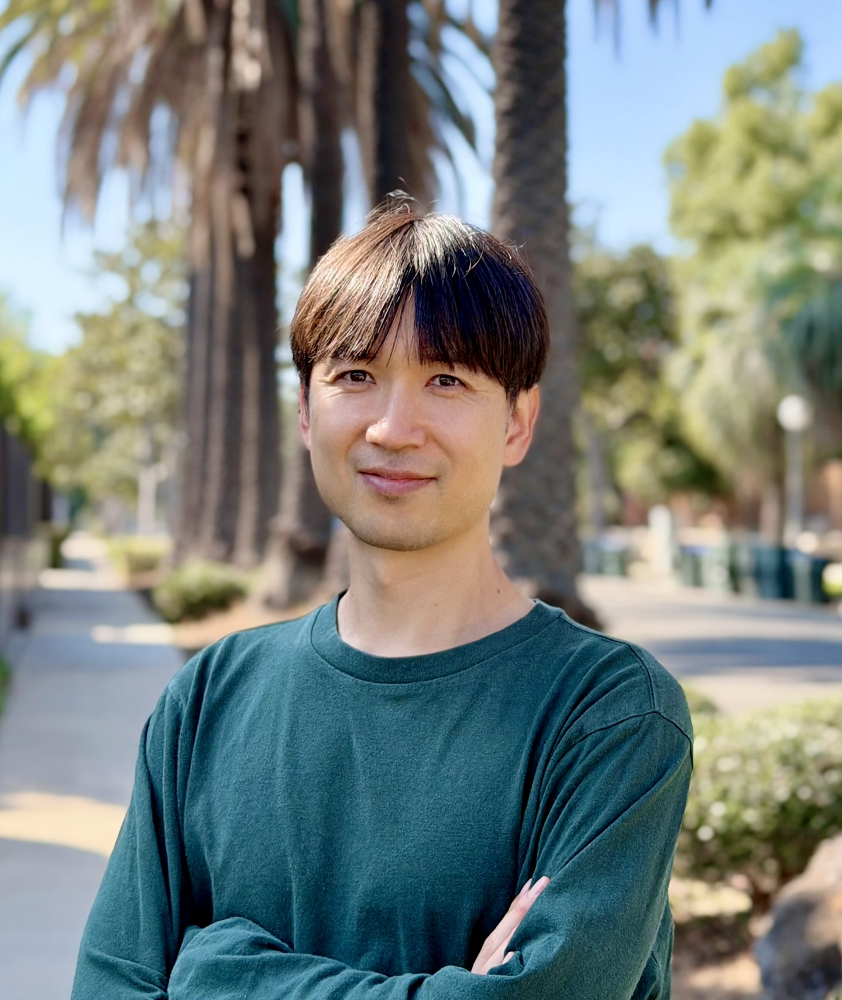

← Back to People

Moon Young Yang
Assistant Professor, DGIST
Moon Young Yang develops computational approaches to understand and design complex molecular systems. His research combines molecular dynamics, quantum chemistry, multiscale simulation, and AI-driven modeling, with applications in energy materials, catalysis, interfaces, and biomolecular systems.
Education
- 2011-2014 Ph.D., Pure and Applied Sciences, University of Tsukuba (Prof. Kenji Shiraishi)
- 2009-2011 M.S., Pure and Applied Sciences, University of Tsukuba (Prof. Masaru Tatno)
- 2005-2009 B.S., Agrobiological Resource Sciences, University of Tsukuba
Professional Experience
- 2026– Assistant Professor, Department of Energy Science & Engineering, DGIST
- 2025–2026 Scientific Researcher, Division of Chemistry & Chemical Engineering, Caltech
- 2019–2025 Postdoctoral Scholar, Division of Chemistry & Chemical Engineering, Caltech (Prof. William A. Goddard III)
- 2014–2019 Postdoctoral Scholar, KAIST Institute for NanoCentury, KAIST (Prof. Yoon Sung Nam)
Awards and Honors
- 2013 Best Paper Award, The 224th ECS Meeting
- 2013 Best Poster Award, International Symposium IEEE EDS WINMACT-37
- 2012 Best Presentation Award, Korean Physical Society Fall Meeting
- 2011–2014 Japan Government Scholarship
- 2009–2011 ITO Foundation for International Education Exchange Scholarship
- 2004–2009 Korea-Japan Joint Government Scholarship